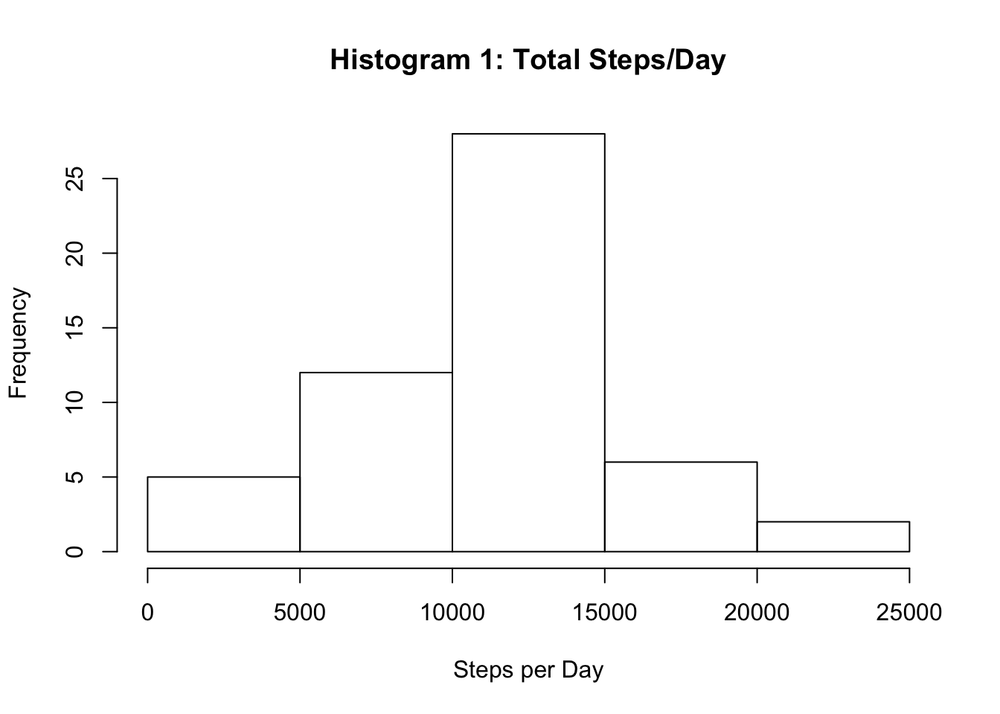

data <- "https://d396qusza40orc.cloudfront.net/repdata%2Fdata%2Factivity.zip"
if(!file.exists("./data")){dir.create("./data")}
filedownload <- download.file(data,destfile="./data/ActivityMonitoring_Steps.zip")
stepsdata <- unzip("./data/ActivityMonitoring_Steps.zip")
stepsdata <- read.csv(stepsdata,header=TRUE,sep=",")library(dplyr)##
## Attaching package: 'dplyr'## The following objects are masked from 'package:stats':
##
## filter, lag## The following objects are masked from 'package:base':
##
## intersect, setdiff, setequal, unionstepsdata_byday <- group_by(stepsdata,date)
stepsdata_byday <- filter(stepsdata_byday,steps != "NA")
stepsdata_byday <- summarise(stepsdata_byday,sum(steps, na.rm = TRUE))
stepsdata_byday <- rename(stepsdata_byday, Date = date, Daily_Steps = `sum(steps, na.rm = TRUE)`)hist(stepsdata_byday$Daily_Steps,xlab="Steps per Day",main="Histogram 1: Total Steps/Day")
mean(stepsdata_byday$Daily_Steps)## [1] 10766.19median(stepsdata_byday$Daily_Steps)## [1] 10765RESULT: The mean steps taken each day are 10766. The median steps taken each day are 10765. Pretty close!
stepsinterval <- group_by(stepsdata,interval)
stepsinterval <- filter(stepsinterval,steps != "NA")
stepsinterval <- summarise(stepsinterval,mean(steps))plot(stepsinterval, xlab="Interval",ylab="Average Steps Taken",type="l",main="Average Steps by Interval")stepsinterval <- rename(stepsinterval, Mean_Steps = `mean(steps)`)
stepsinterval <- arrange(stepsinterval,desc(Mean_Steps))
stepsinterval[1,]## # A tibble: 1 x 2
## interval Mean_Steps
## <int> <dbl>
## 1 835 206.1698RESULT: The maximum average steps taken is 206, taken at interval 835.
sum(is.na(stepsdata$steps))## [1] 2304There are 2304 missing values.
We will use our pre-calculated interval means table (stepsinterval) to fill in the NA values.
library(imputeTS)
datacopy <- stepsdata
datacopy <- merge(datacopy,stepsinterval,by.x="interval")
datacopy <- arrange(datacopy,date)
datacopy$steps <- na.replace(datacopy$steps,fill=datacopy$Mean_Steps)## Warning in na.replace(datacopy$steps, fill = datacopy$Mean_Steps): number
## of items to replace is not a multiple of replacement lengthdatacopy <- select(datacopy, interval,date,steps) sum(is.na(datacopy$steps))## [1] 0datacopy <- group_by(datacopy, date)
stepsbyday <- summarize(datacopy,sum(steps))
hist(stepsbyday$`sum(steps)`,xlab="Steps per Day",main="Histogram 2: Total Steps per Day (Includes Imputed Values)")mean(stepsbyday$`sum(steps)`)## [1] 10766.19median(stepsbyday$`sum(steps)`)## [1] 10766.19RESULT: The mean and median are equivalent to each other and the days in which all values were imputed for NA. The mean remains the same as it did in Histogram 1 but the median differs slightly. Imputing missing values caused our median to shift.
datacopy$date <- as.Date(as.character(stepsbyday$date))
stepsbyweekday <- mutate(datacopy,Weekday = weekdays(date))
daysofweek <- unique(stepsbyweekday$Weekday)
stepsbyweekday$Weekday <- factor(stepsbyweekday$Weekday,levels=c(daysofweek),ordered = TRUE)
stepsbyweekday <- mutate(stepsbyweekday, DayNo. = as.integer(Weekday))
stepsbyweekday <- mutate(stepsbyweekday,DayClass = if_else(DayNo.>5,"weekend","weekday"))
stepsbyweekday$DayClass <- as.factor(stepsbyweekday$DayClass)
stepsbyweekday <- arrange(stepsbyweekday,date,interval)
stepsbyweekday <- group_by(stepsbyweekday,DayClass,interval)averagesteps <- group_by(stepsbyweekday,interval,DayClass)
averagesteps <- summarize(averagesteps,mean(steps))library(lattice)
xyplot(`mean(steps)`~interval|DayClass,data=averagesteps,layout=c(1,2),type="l",main="Average Steps per Interval by Time of Week",ylab="Average Steps",xlab="Interval")RESULT: The subject appears to be more active on weekends. We could hypothesize that this is when they are away from their weekly desk job. The subject also appears to stay up a little bit later on weekends, as shown by the spike in activity at the tail of the weekend data.